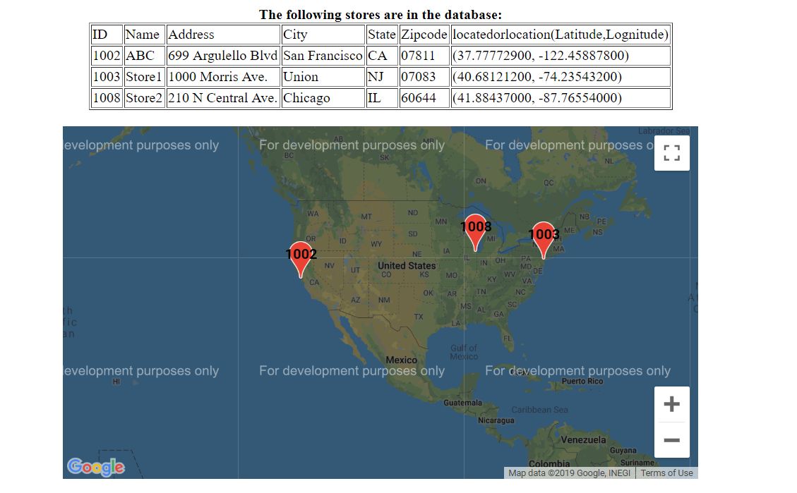

Main Page
The program will read and display stored id,
name, address, city, state, zipcode, and GIS
location (latitude, longitude) on the web
page in TABLE format as shown in Figure.
Store information will be retrieved from the database table called Stores.
Stores will not be marked on google map in case of unknown or missing GIS location which is supposed to be reacquired from database server.
A new tab or window will display a single Google Map under the store information table on the same web page as shown in Figure.
Markers on Map
Stores are correctly marked with their store id at the correct positions on the map.
When the store is clicked, the corresponding store name, address, city, state, zipcode should be displayed above the store marker.
The Google map is centered by obtaining the average location of all stores.The center should be readjusted automatically if the store records are changed.
The zoom level is set properly so all stores can be seen when the map is displayed.